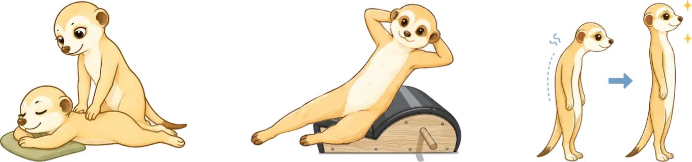

こんなお悩みは
ありませんか？
- 慢性的な肩こり・腰痛がある
- 猫背や反り腰に悩んでいる
- 姿勢を良くしたい
- 身体が硬い
- 股関節に詰まり感がある
- 疲れにくい身体になりたい
- 整体へ行ってもすぐ元に戻る
- 運動しているのに思うような変化を感じられない
- 太っていないのにスタイルが悪いと感じる
- 身体を根本から変えたい
整体×ピラティスとは
身体の不調や動きにくさは、筋力だけではなく、姿勢や身体の緊張、
関節の動きや身体の使われ方など、さまざまな要素が関係しています。
Re:moveの整体×ピラティスでは、まず整体によって身体の状態を整え、
動きやすい土台をつくります。
その上でピラティスを行うことで、整えた身体を自分自身でコントロールし、
自然な動きへつなげていきます。
整体で一時的に整えるだけでも、ピラティスで動きを繰り返すだけでもなく、
「整える」と「動く」を組み合わせることで、日常を快適に過ごせる身体づくりを目指します。
Re:moveの整体×ピラティスは、渋谷・恵比寿・横浜エリアのレンタルサロン・スタジオで受けていただけます。
ご予約時にセッション会場の詳細をご案内しています。

Re:moveの
整体×ピラティス
身体の状態を確認し、
整体とピラティスを組み合わせながら、
動きやすい身体づくりをサポートします。
身体を整えて
動きやすい土台をつくる
身体の緊張や姿勢、関節の動きなどを確認し、今の身体に必要なアプローチを行います。
まず身体が動きやすい状態をつくることで、ピラティスのエクササイズにも取り組みやすくなります。
動きを通して身体に定着させる
整えた身体でピラティスを行うことで、自分自身で身体をコントロールする力を育てます。
整体で整えるだけではなく、動きを通して変化を維持しやすい身体づくりを目指します。
整体とピラティス、
それぞれの役割
整体とピラティスには、
それぞれ得意な役割があります。
身体の状態や目的に合わせて
組み合わせることで、
より効果的な身体作りにつなげていきます。
| 整体 | ピラティス | 整体×ピラティス | |
|---|---|---|---|
| 得意なこと | 身体の状態を整える | 動く力を育てる |
整えてから動くことで、 身体の変化につなげる |
| アプローチ |
筋肉や関節の状態を確認し、 動きやすい土台をつくる |
エクササイズを通して、 身体をコントロールする力を育てる |
身体を整えた状態で動くことで、 より自然な動きにつなげる |
| 特徴 |
整った状態を維持するには、 自分で動くことも大切 |
身体の状態によっては、 動きにくさが残ることもある |
整えることと動くことを バランスよく取り入れる |
Q & A
整体×ピラティスについてのよくある質問
Q.なぜ整体とピラティスを組み合わせるのですか？
A.整体で身体を整えるだけでも姿勢や動きは変わりますが、その状態を維持しやすくするためには、整った身体を実際に動かすことも大切です。
Re:moveでは、整体で関節や筋肉、神経にアプローチして動きやすい状態をつくり、その状態でピラティスを行うことで、無理なく動きやすい身体づくりを目指します。
お身体の状態や目標に合わせて整体とピラティスの内容を調整し、一人ひとりに合ったサポートをご提案します。
Q.ピラティス単体のメニューはありませんか？
A.そう思われる方も多いのですが、Re:moveではピラティス単体のメニューはご用意しておりません。
身体に緊張が強かったり、動きにくさがある状態でピラティスを行うよりも、まず施術で身体のコンディションを整えてから動かすことで、無理なく変化を感じやすくなると考えているためです。
整体とピラティスの配分は、その日の状態やご希望に合わせて都度相談しながら決めていきます。
「ピラティス多めで行いたい」といったご要望も遠慮なくお伝えください。
Q.運動が苦手でもできますか？
A.運動経験や体力に合わせて内容を調整しますので、運動が苦手な方でも安心してご利用いただけます。
Re:moveでは、その日の身体の状態に合わせて整体とピラティスを組み合わせます。
身体を整えてから動くことで、無理なく身体を動かしやすい状態を目指します。
Q.身体が硬くてもできますか？
A.もちろん大丈夫です。
身体が硬い方は、筋肉の緊張や関節の動きによって動きにくくなっていることもあります。
整体で身体を整えてから、お身体の状態に合わせて進めますので、身体が硬い方でも安心してご利用いただけます。
Q.どんな服装で行けばいいですか？
A.動きやすい服装であれば大丈夫です。
ピラティスウェアでなくても、Tシャツやレギンス、ジャージなど普段の運動着で問題ありません。
整体とピラティスのどちらも受けられる服装であれば、そのままご利用いただけます。
Q.どのくらいの頻度がおすすめですか？
A.身体の状態や目標によって異なりますが、身体の変化を感じやすくし、動きやすい状態を定着させるためには、初めのうちは週1回程度の継続がおすすめです。
その後は、お身体の状態や生活スタイルに合わせて、2週に1回や月1回など無理のないペースをご提案します。
また、セッションではご自宅でも取り組めるセルフケアや簡単なエクササイズもお伝えしています。
セッションと日常での取り組みを組み合わせることで、より身体の変化を感じやすくなります。
Contact
ご相談・ご予約はこちら
「練習しているのに思うように上達しない」
「自分の身体のどこに原因があるのか分からない」
そんな方もお気軽にご相談ください
ご予約は、予約フォームまたは公式LINEより受け付けています。
ご予約前に確認したいことやご相談がある場合は、
公式LINEからお気軽にお問い合わせください。
Instagramからのお問い合わせをご希望の方は、DMよりご連絡ください。